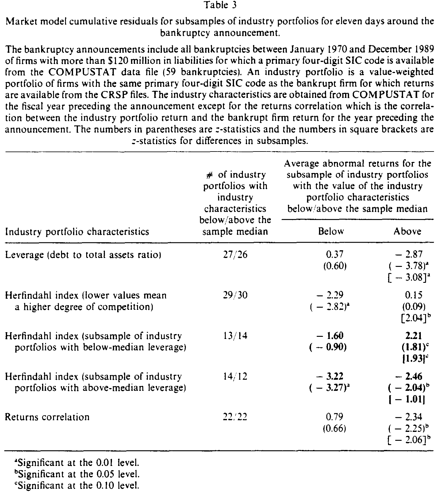
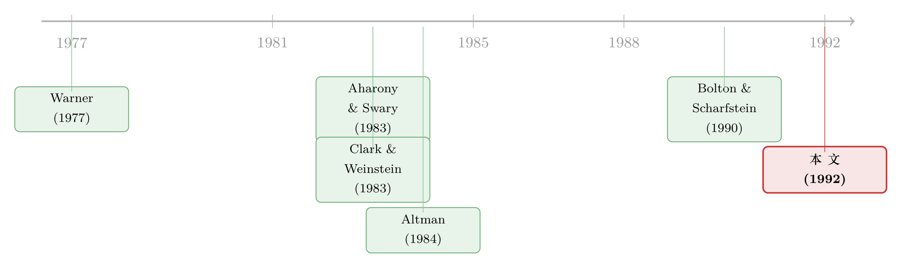

一家公司倒下，同行是陪葬，还是分食者？
本文读的是 Lang & Stulz (1992, Journal of Financial Economics)：一家大公司宣布破产，会平均拖累同行业竞争对手的股权价值约 1%；但这个负效应并非铁律——在高杠杆、且与破产企业现金流高度相关的行业里它显著放大（高杠杆子样本 -2.87%），而在高集中度、低杠杆的行业里反而翻转为正（+2.2%），竞争对手是在「分食」破产者的尸体。
1 一个反直觉的问题
先讲一个几乎所有人都默认的常识：破产是会「传染」的。
一家公司倒下，新闻里、债权人嘴里、供应商心里冒出来的第一反应，往往是「这个行业是不是不行了」。客户开始怀疑同行的信用，供应商收紧账期，于是同一行业的其他公司——哪怕它们财务上健康得很——也跟着遭殃。这就是所谓的 传染效应 (contagion effect)。
但只要你肯往下多想一步，就会发现这个故事缺了一半。一家公司之所以会倒，未必是因为「整个行业完了」，也可能恰恰是因为它自己干不过别人：产品过气了、成本失控了、被对手抢走了订单。如果是后一种情形，那么它的破产对竞争对手来说根本不是坏消息，而是一封请柬——市场份额要空出来了，定价权要松动了，弱者退场，强者分食。这是 竞争效应 (competitive effect)。
于是问题就尖锐起来了：当一家大公司宣布破产，它的竞争对手的股价，到底是跌还是涨？
这正是 Lang 和 Stulz 这篇 1992 年 JFE 论文要回答的。表面上它是一篇规规矩矩的事件研究 (event study)，但它真正动人的地方，是把「破产传染」这个被反复念叨、却从没被认真拆开的概念，第一次掰成了两股方向相反的力，并且告诉你：在什么样的行业里，哪一股力会赢。
（关于「传染」这个词本身的测度有多微妙，可参见《别再盯着相关系数了——用「一起暴跌」数出传染》。）
2 把「破产传染」拆成两股力
这篇论文没有写下一个正经的数理模型，但它的概念框架本身就是一套严密的「拆解术」，值得一步步走一遍。
作者的出发点是：一个破产公告，归根结底是在向市场传递关于现金流的信息。把它对竞争对手股权价值的总效应，记成两部分之和：
$$ \text{Total effect} = \text{Contagion effect} + \text{Competitive effect} $$
第一股力：传染效应（通常为负）。 把一家公司看成一篮子你看不清真实价值的投资。一旦它申请破产，外部投资者就读到了一个坏消息——既然破产是有成本的，那么它本可以靠融资续命却没有续成，说明它的资产价值确实低于先前的预期。关键在于，同行业的竞争对手，往往持有现金流特征高度相似的资产。于是这条坏消息会「外溢」到它们身上：
传染效应的强弱，取决于行业内现金流特征的相似度。两家公司越像，一家的坏消息越能说明另一家也不妙。
第二股力：竞争效应（通常为正）。 设想一个 不完全竞争 (imperfect competition) 的行业，每家公司面对的需求曲线都不是完全弹性的。如果破产企业是因为自己的产品失去吸引力、需求被对手抢走而倒下，那么这个公告对其余公司就是好消息——它们正在、或即将迎来需求的上升。在垄断色彩越浓的行业里，这份多出来的需求越能转化成实打实的租金 (rents)。更狠的一层是「趁火打劫」(predation)：破产会削弱一家公司的反击能力——它很难快速融资，管理层的注意力又被破产程序牵走——于是健康的对手可以压价、抢单，把它进一步逼向墙角。
但真正关键的一步，是把杠杆 (leverage) 拧进来。 这里藏着这篇论文最精巧的识别逻辑。
传染效应和竞争效应改变的都是公司的总价值，而我们在股价上观察到的是股权价值。杠杆在这两股力上的作用并不对称：
- 对传染效应：杠杆是个纯粹的放大器。坏消息压低总价值，杠杆越高，(1) 股权价值对总价值的弹性越大，(2) 总价值下跌又会抬高破产概率、增加直接破产成本的现值。两条都让股权跌得更狠。
- 对竞争效应：杠杆的作用是双向的、模糊的。一方面，高杠杆同样放大股权对现金流的敏感度；但另一方面，高杠杆会束缚一家公司投资、扩张的能力，让它没法抓住眼前的竞争机会。Bolton & Scharfstein (1990) 的掠夺理论正好给了这一面一个干净的支点：负债轻的公司可以去捕食负债重的公司，因为后者缺乏弹性去应对市场变化。
把这两条合起来，作者推出了一组可检验的、方向明确的预测：
在高杠杆 + 激烈竞争的行业，竞争对手受损最重（传染主导，且杠杆放大）；在低杠杆 + 高集中度的行业，竞争对手反而受益（竞争效应得以兑现，杠杆又没有捆住它们的手脚）。
这就是全篇的「核心」。下面的实证，本质上是在为这一个判断逐条对账。
3 识别策略与数据
先说怎么量「竞争对手的股价反应」。
样本。 1970 年 1 月到 1989 年 12 月之间、负债超过 $120 million 的所有破产案，数据来自 Altman (1990) 的整理，共 59 起。之所以只盯大破产，是因为只有体量够大，才可能产生行业级别的外溢，小破产多半是纯特质性的噪声。一家破产公司的「行业」，被定义为 COMPUSTAT 里拥有相同四位 SIC 码 (primary four-digit SIC code) 的全部其他公司。
组合构造。 对每一起破产，作者用同行业、且在 CRSP 有收益率的公司，构造一个市值加权 (value-weighted) 的竞争对手组合。同一行业若有多起破产，就对每起分别构造组合，以反映行业成分的变动。（等权组合也算了，结果类似，没单独报告。）
事件日与超额收益。 事件日是《华尔街日报》刊登 Chapter 11 申请的当天。超额收益 (abnormal return, AR) 用 市场模型 (market model) 残差度量：
$$ AR_{it} = R_{it} - (\hat{\alpha}_i + \hat{\beta}_i R_{mt}) $$
其中市场组合是 CRSP 市值加权指数，beta 用 Scholes & Williams (1977) 的方法估计以处理非同步交易，估计窗口取首次困境公告前的 -250 到 -50 天。对竞争对手组合直接估市场模型，这样能自动吸收行业内收益的横截面相关性。显著性用 z 统计量评估。
这里有个常被忽略却很要紧的细节：识别的「外生变动」并不来自破产本身这个动作，而来自破产消息中关于行业共同现金流成分的信息含量。作者很坦诚地承认，他们没法在「真传染（信息+客户/供应商反应）」和「良性传染（纯信息效应）」之间做干净的区分——而这两者对公共政策的含义截然不同：如果传染只是信息效应，它就没有社会成本。这是全文识别上最大的留白，后面我会再回到它。
4 主要结果：先看平均，再看分化
第一层，平均效应。 把 59 个竞争对手组合的超额收益等权平均，结论是：破产公告日前后（-5 到 +5 共十一天），竞争对手组合平均损失 -1.07%，在 0.05 水平显著；传统的 -1 到 0 事件窗口为 -0.35%。作为对照，破产公司自己在申请日（通常是 -1 天）一天就跌掉 -18.93%，-5 到 +5 累计 -28.25%。
也就是说，平均而言，传染效应压倒了竞争效应——同行确实是陪葬的多。但作者立刻提醒：别被这个「1%」的小数字骗了。一个行业的股权总市值通常远大于破产公司本身，按美元算，竞争对手组合的损失和破产公司的损失大致相当；若假设所有同 SIC 码公司都承受这个百分比损失，竞争对手的美元损失甚至远超破产公司本身。破产的经济成本，很大一块是摊在同行身上的，而我们平时根本没去数它。
第二层，也是真正的反转——分化。 41 个行业里，25 个（60.9%）平均超额收益为负，显著多于零假设下的预期。但平均数掩盖了符号的撕裂。作者按三个维度切样本：
- 杠杆。 行业长期负债/总资产的样本中位数仅
0.22（说明样本里大多数行业其实并不高杠杆）。高杠杆子样本的超额收益是-2.87%，在 0.01 水平显著；低杠杆子样本则为正、且不显著。两个子样本之差本身也显著。 - 竞争程度（Herfindahl 指数）。 用竞争对手销售额构造的 赫芬达尔指数 (Herfindahl index) 作集中度代理（值越低=竞争越激烈）。竞争最激烈那一半，超额收益约
-2.29%；最集中那一半约+0.15%。 - 现金流相关性。 竞争对手组合收益与破产公司收益的相关性越高，传染越凶。
最干净的一击落在两个维度的交叉上：在高集中度、低杠杆的行业里，竞争对手的股权价值不是跌，而是上涨 2.2%。这正是第 2 节那套拆解术预言的「分食者」情形——竞争效应终于压过了传染效应。

Table 3
作者还顺手挖出一条耐人寻味的证据：8 个行业在样本期内有不止一起大破产，其中 6 个平均超额收益为负；而 4 个显著为负的行业里有 3 个是「多次破产」行业。再看破产前 750 天的行业超额市场收益——全样本平均是不显著的正值，但「多次破产」行业却显著为负。换句话说，一个行业本来就在走下坡路时，破产更可能源于行业级冲击而非行业内的财富再分配，传染也就更凶。这一条把「传染 vs 竞争」的判别，从横截面进一步推到了时间维度上。
5 文献脉络
这条研究线的起点，其实是一个「没找到」的结果。最早把破产公司竞争对手的股价反应拎出来看的，是 Warner (1977)——他用月度收益研究铁路业，没有发现传染。但月度数据太钝，事件窗口里塞满了噪声，看不清也属正常。

接着，事件研究的精度随着日度数据上来了。Clark & Weinstein (1983) 把破产公司本身的股价反应钉得很死（本文 -18.93% 的单日损失正是与他们在更小样本上的估计相吻合）。与此同时，传染的概念被搬到更宏大的舞台：Bernanke (1983) 在大萧条的语境里讨论金融传染；而 Aharony & Swary (1983) 研究三家银行倒闭，发现那起「纯特质性」原因的破产没有显著传染效应——这恰恰从反面支持了「传染源于行业共同信息」的逻辑。
另一边，竞争效应的种子来自 Altman (1984) 对破产成本的早期论述，以及产业组织里关于不完全竞争与租金的传统。真正给「低杠杆者捕食高杠杆者」提供理论支点的，是 Bolton & Scharfstein (1990) 的掠夺模型。
Lang & Stulz (1992) 的位置，就是把这两条平行的线索——「传染」与「竞争」——第一次焊进同一个框架，并用杠杆和集中度作为撬动二者相对强弱的杠杆点。它之后，这条线继续延伸到联盟伙伴的破产外溢、资产质量公告的行业传染等方向（可参见《你的合伙人破产了，你会不会跟着一起垮？》，以及《一家银行去发股票，凭什么别家银行也跟着跌？》里同源的「信息外溢」逻辑）。
6 评论与延伸（Q&A + 研究方向）
(a) 几个可能的疑问
Q：平均只有 -1%，这点效应也值得大书特书吗？
值得，原因不在百分比而在美元。行业总市值远大于单家破产公司，作者估算竞争对手组合的美元损失与破产公司本身大致相当，若推广到全部同 SIC 码公司则远超之。破产的社会成本被严重低估了，因为没人去数摊在同行身上的那一份。
Q：用四位 SIC 码定义「行业」「竞争对手」，靠谱吗？
这是全文最脆的一环。SIC 码是行政分类，未必对应真实的产品市场竞争——有些四位码内公司其实不直接竞争，有些真正的对手又跨了码。这会同时稀释传染和竞争两种信号，让效应偏向被低估。后来用产品相似度（如基于文本的 TNIC）的研究，多半能把这类效应识别得更利落。
Q：怎么确定 +2.2% 是「竞争效应」，而不是别的什么？
严格说不能直接确定，作者靠的是「方向预测的交叉验证」：理论事先预言竞争效应应在高集中度、低杠杆行业最强，而数据恰好在这个角落里翻成正号。多个维度（杠杆、Herfindahl、现金流相关性）一致地指向同一套机制，是它说服力的来源，而非单一系数的显著性。
Q：破产公司自己跌 19%，对手只动 1%，会不会其实是同一条信息被「稀释」了？
部分是，但不全是。如果纯粹是同一坏消息按相关性衰减地传给对手，那就只剩传染、不该出现正号。
+2.2%的存在本身就证明：破产公告携带的不只是「行业现金流变差」的信息，还有「行业内财富如何重新分配」的信息——后者才是竞争效应的来源。
Q：「真传染」和「良性的信息传染」没区分开，要紧吗？
对学术结论不致命，对政策含义却是关键。若负效应纯粹是信息效应（市场只是修正了对行业前景的预期），它没有社会成本；但若是客户、供应商因恐慌而真的抽身，导致健康公司也现金流恶化，那就是实打实的资源错配。本文没能拆开这两者，这是它留给后人的最大缺口。
Q：59 起破产、41 个行业，样本是不是太小？
偏小，尤其切成子样本后每格里只有二三十个组合，z 统计量的可靠性要打折扣。这也是为什么作者非常克制地只报告方向和子样本均值，而没有去跑复杂的横截面回归——样本撑不起。
(b) 几个可能的研究问题与提案
-
把传染搬进公司债/CDS 市场。 【经济故事】股权反映的是「总价值×杠杆弹性」，而本文反复强调杠杆才是传染放大的关键。那么直接去看竞争对手的信用利差或 CDS 价差，应该比股价更干净地捕捉到「破产抬高了同行的违约概率」这一条机制。 【可行性】高。TRACE + Markit CDS + Moody's 违约数据库 足以构造；识别上可沿用本文的事件研究框架，按行业杠杆与集中度切样本，预期高杠杆行业的对手利差走阔最猛。
-
用产品相似度替代 SIC 码，重做这篇 33 年前的论文。 【经济故事】本文的「现金流相关性」其实是「产品像不像」的粗代理。若用基于 10-K 文本的 TNIC 行业分类去定义对手，传染（相似度）和竞争（替代弹性）两条线能被分得更开。 【可行性】高。Hoberg-Phillips 数据公开，破产事件可从多个数据库扩样本到数千起，是一个干净的「老题新做」。
-
外资持有人是传染的「导管」还是「缓冲」？ 【经济故事】如果竞争对手的股东里有大量会因恐慌而跨行业、跨国撤资的外资，破产的负外溢可能被放大；反之若外资是长期持有者，则可能起缓冲作用。 【可行性】中。需要 FactSet/13F 级别的持有人结构数据匹配到事件，识别上要小心持有人结构本身的内生性（好公司吸引好股东）。
-
区分「真传染」与「信息传染」：用供应链微观数据。 【经济故事】本文最大的缺口。若能观察到破产后供应商的应收账款、客户的订单流是否真的恶化，就能把「市场只是改预期」与「实体关系真受损」分开。 【可行性】中偏低。需要供应链关系数据（如 FactSet Revere）加交易层面的商业信用数据，匹配难度大，但一旦做成，政策含义极强。
参考文献
Aharony, J. and I. Swary (1983). Contagion effects of bank failures: Evidence from capital markets. Journal of Business 56, 305–322.
Altman, E. (1969). Bankrupt firms' equity securities as an investment alternative. Financial Analysts Journal, July–Aug., 129–133.
Altman, E. (1984). A further investigation of the bankruptcy cost question. Journal of Finance 39, 1067–1089.
Bernanke, B. S. (1983). Nonmonetary effects of the financial crisis. American Economic Review 73, 257–276.
Bolton, P. and D. Scharfstein (1990). A theory of predation based on agency problems in financial contracting. American Economic Review 80, 93–106.
Clark, T. A. and M. Weinstein (1983). The behavior of the common stock of bankrupt firms. Journal of Finance 38, 489–504.
Lang, L. H. P. and R. M. Stulz (1992). Contagion and competitive intra-industry effects of bankruptcy announcements: An empirical analysis. Journal of Financial Economics 32, 45–60.
Scholes, M. and J. Williams (1977). Estimating betas from nonsynchronous data. Journal of Financial Economics 5, 309–328.
Stulz, R. M. (1990). Managerial discretion and financing policies. Journal of Financial Economics 26, 3–27.
Warner, J. B. (1977). Bankruptcy and the pricing of risky debt. Journal of Financial Economics 4, 239–276.
评述者的判断。 这篇论文的贡献，不在于「破产会拖累同行」这个发现本身——那几乎是常识——而在于它第一个把「传染」掰成两股方向相反的力，并给出可检验、可分化的预测。
+2.2%这个翻转的符号，是全文最有分量的一击：它证明破产公告里装的不只是「行业变差」的坏消息，还有「财富在行业内重新分配」的信息。对识别，我有两点担忧：一是 SIC 码对「真实竞争对手」的刻画太粗，会把两种效应一起稀释；二是作者自己也承认的、未能拆开的「真传染 vs 信息传染」，这恰恰是政策上最要紧的一刀。我最想看到的后续，是把这套框架搬到信用市场——用竞争对手的 CDS 利差去重新度量传染，因为杠杆既是本文的理论枢纽，也正是信用利差最敏感的地方；那里应该藏着这篇 1992 年论文没能讲完的下半个故事。